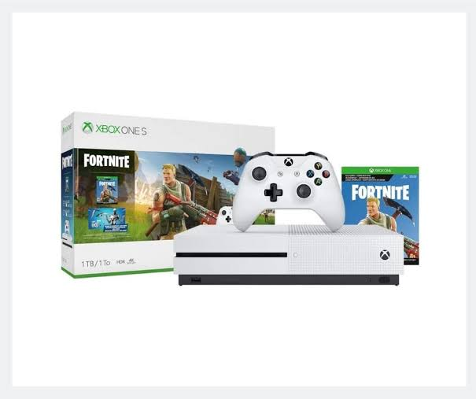
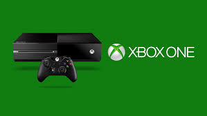

Xbox One Overview
Xbox One launched on November 22, 2013. This generation included the original Xbox One, Xbox One S, and Xbox One X. It focused on games, apps, streaming, Blu-ray, Game Pass, and backward compatibility with selected older Xbox games.
Reference: Xbox Wire: Xbox One Launch
Xbox One
Xbox One added a smaller design and 4K video support. Xbox One X was more powerful and focused on better visuals and performance for supported games.
Reference: Xbox One S Official Page

Game Pass and Backward Compatibility
Xbox One helped grow Xbox Game Pass and backward compatibility. This allowed players to enjoy newer games while also playing many games from older Xbox generations.
Reference: Xbox Backward Compatibility
